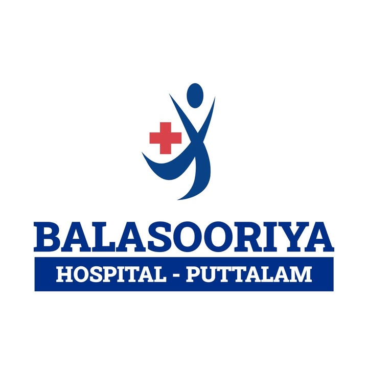

Balasooriya Pvt HospitalBalasooriya Hospital, Puttalam — open 24 hours, 365 days a year. Serving the North Western Province since 2009.
Consultants across medicine, surgery, OB/GYN, paediatrics, and more.
On-site diagnostics — member of the Randox International Quality Assessment Scheme (UK).
Consultation hours are Monday–Friday 6:00–8:00 AM and after 4:00 PM, and Saturday–Sunday 6:00 AM–8:00 PM, with a night on-call service.
ISO 9001:2008 quality management, ISO 14001:2004 environmental management, and BS OHSAS 18001 occupational health & safety.
Gold at the National Business Excellence Awards 2017 and Best Private Hospital at the Wayamba Health Excellence Awards.
Customer privacy, professional ethics, and adherence to local and international healthcare standards.
Gold (Provincial) and Silver (National) from the Ceylon National Chamber of Industries.
Awarded Gold at the National Business Excellence Awards.
Recognised as Best Private Hospital in the North Western Province.
Address: 118/A Kurunegala Road, Puttalam, Sri Lanka
Hotline: 032-226-6266 · 032-226-7153 · 071-401-9149
Email: info@balasooriyahospital.lk